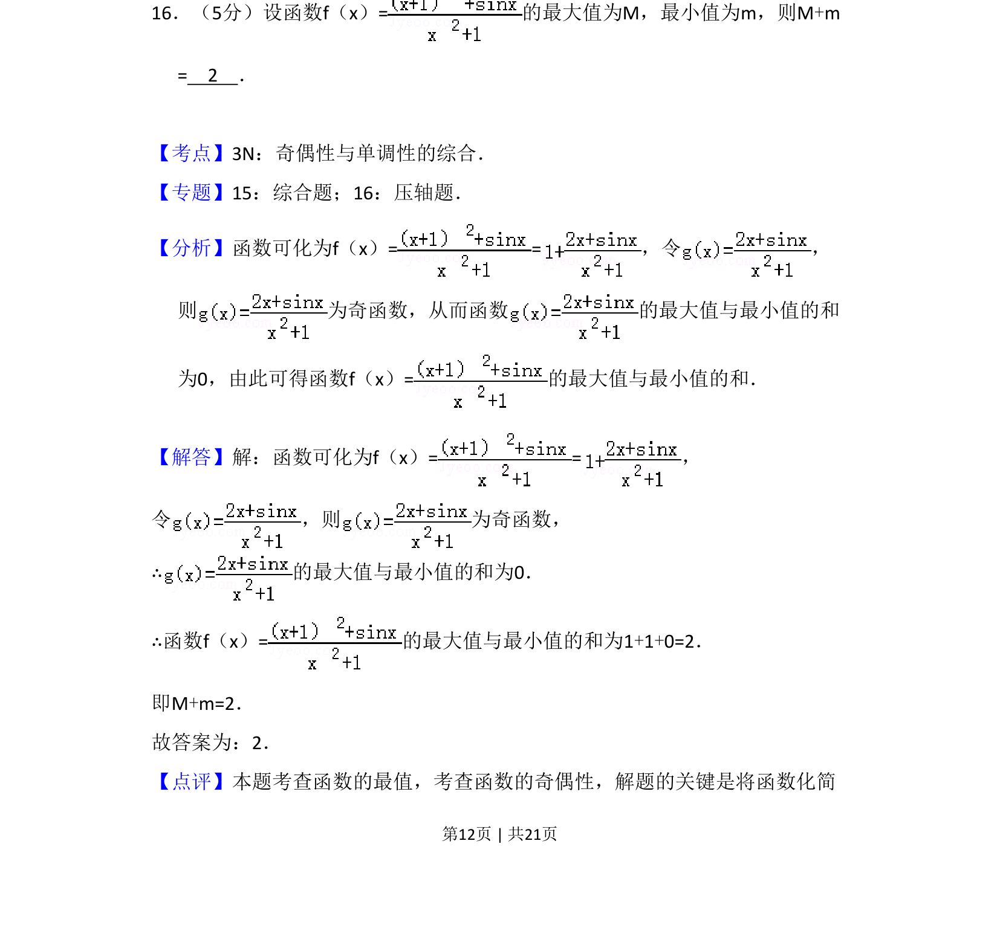
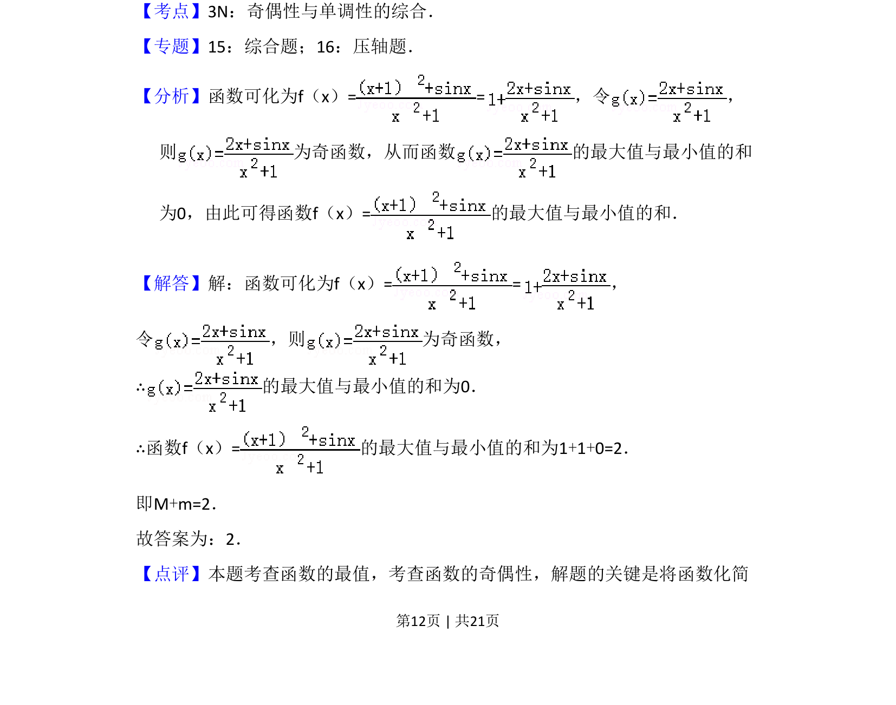
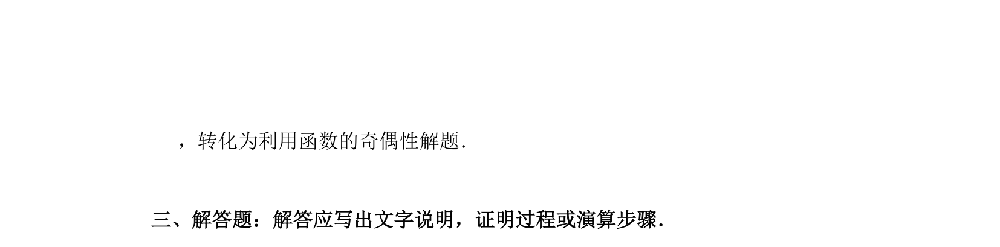

考点：奇偶性 函数最值 奇函数性质

利用奇函数性质求函数最大值与最小值之和


📄 原 PDF 第 12 页：
素材/真题/吉林/2008-2024·（吉林）数学高考真题/2012年高考数学试卷（文）（新课标）（解析卷）.pdf
16．（5分）设函数f（x）=的最大值为M，最小值为m，则M+m = 2 ．
【考点】3N：奇偶性与单调性的综合．菁优网版权所有 【专题】15：综合题；16：压轴题． 【分析】函数可化为f（x）= =，令 ， 则 为奇函数，从而函数 的最大值与最小值的和 为0，由此可得函数f（x）=的最大值与最小值的和． 【解答】解：函数可化为f（x）= =， 令 ，则 为奇函数， ∴的最大值与最小值的和为0． ∴函数f（x）=的最大值与最小值的和为1+1+0=2． 即M+m=2． 故答案为：2． 【点评】本题考查函数的最值，考查函数的奇偶性，解题的关键是将函数化简